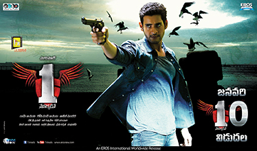

I am Shiva Kumar Allam currently pursuing my masters in Northwest Missouri State University. I won Second Prize in State Level Painting Competition conducted by NTPC I am Interested in Painting, Sketching, Cricket.
1-Nenokkadine was shot in a 500 years old house in Belfast. That’s where they found that musical instrument. Nobody knew the name of that instrument that shown during the films opening credits. It’s an old instrument that can play 12 tunes. Incidentally the nursery tune composed by DSP was very close to one of the 12 tunes.
